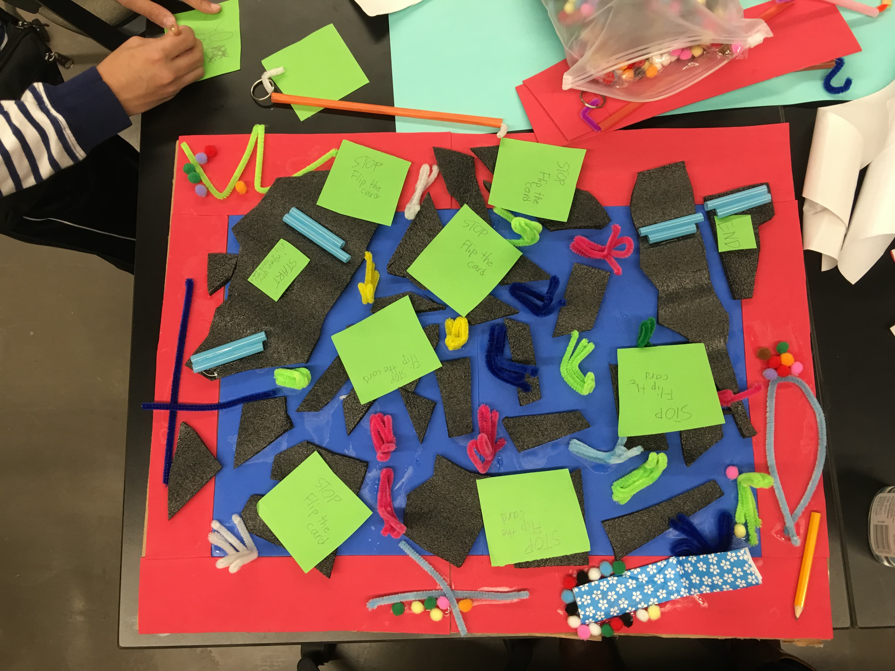

FamJam!

FamJam! engages children and their families in a making, learning, and bonding experience. Over three sessions, families use low- and high-tech tools to create a game based on a family narrative or story. We seek to understand how we can meaningfully engage families in “making” activities both in facilitated makerspaces and at home.
News
'Inclusive Making' Helps Students Design for People with Disabilities
FabLearn 2020: Diversity in Maker Ed